Introduction to Deep Reinforcement Learning
Artificial Intelligence (AI)
- Artificial Intelligence (AI) is a domain of computer science dedicated to developing software capable of exhibiting attributes of intelligence.
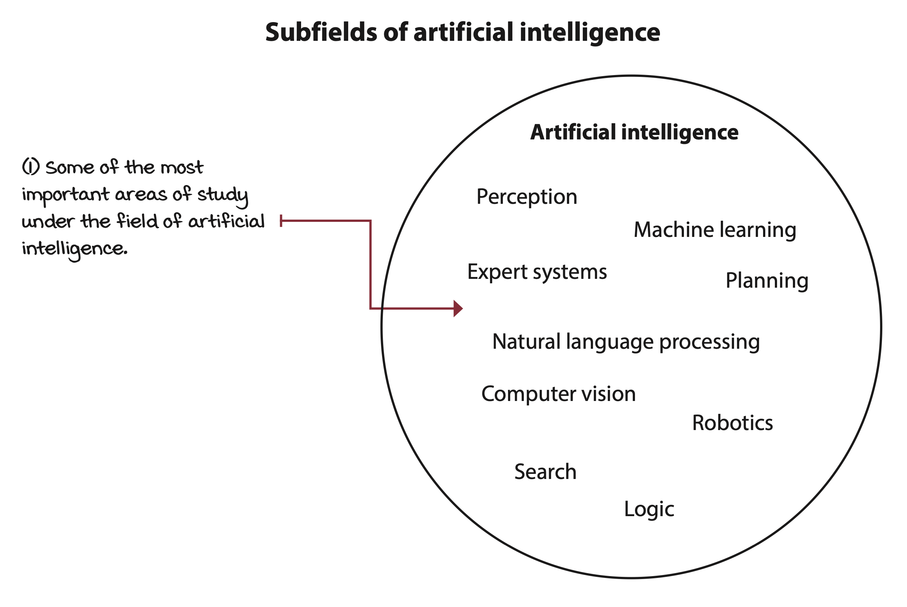
Machine Learning (ML)
- Machine learning, a subset of AI, tackles problems necessitating intelligent solutions by learning from data.
- Supervised Learning (SL): A method that learns from labeled data.
- E.g., handwritten-digit-recognition
- Unsupervised Learning (UL): A method that learns from unlabeled data
- E.g., customer segmentaiton
- Reinforcement Learning (RL): A method that learns from trial and error
- E.g., pong-playing agent
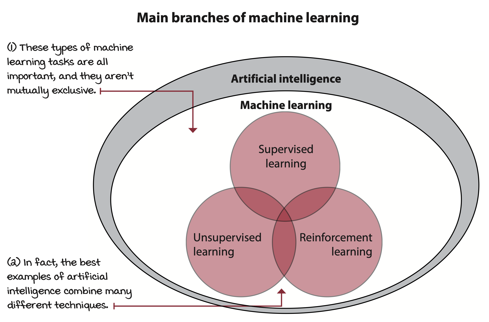
Deep Learning (DL)
- Deep Learning employs multi-layered non-linear function approximations, also known as neural networks, to address ML tasks. Essentially, it is a suite of techniques that utilize neural networks to solve ML challenges.
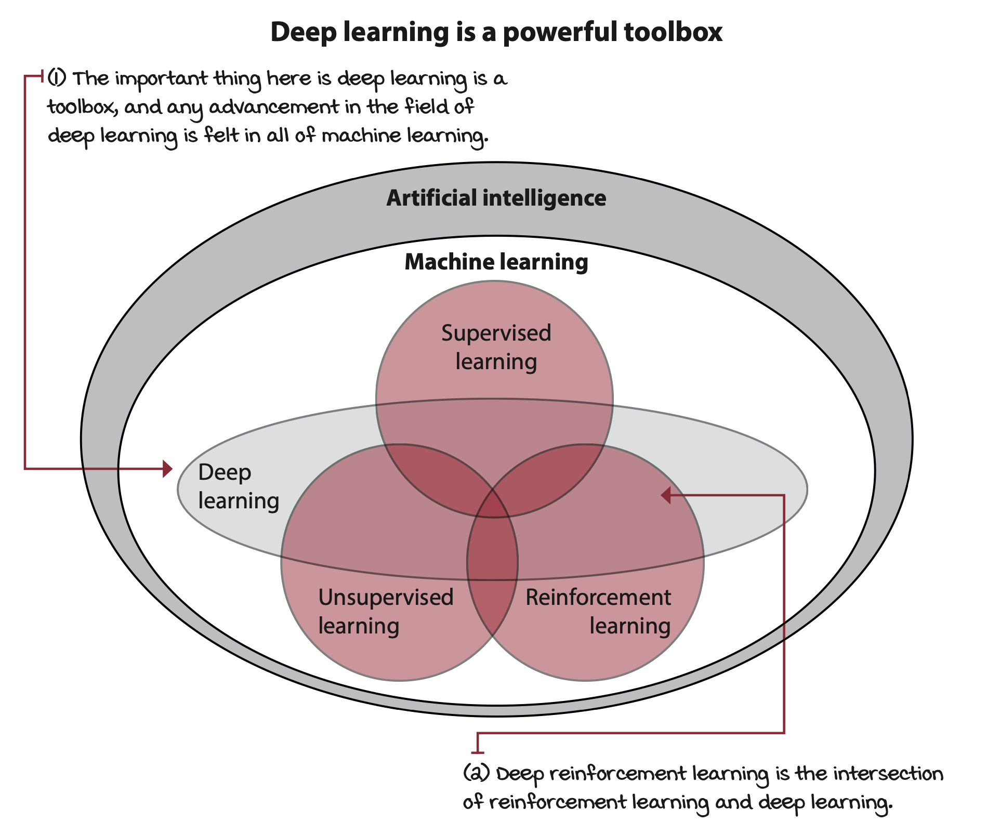
Deep Reinforcement Learning (DRL)
- Deep Reinforcement Learning learns through trial and error from feedback that’s simultaneously sequentially, evaluative, and sampled by leveraging non-linear function approximation (neural networks).
Reinforcement Learning (RL)
Similar fields
- Reinforcement Learning (RL): Investigates methods of resolving intricate sequential decision-making problems under uncertain conditions.
- Control Theory (CT): Examines methods of controlling complex known dynamic systems.
- Operations Research (OR): Investigates decision-making under uncertain conditions, generally featuring a larger action space than in DRL.
- Psychology: Studies human behavior, which frequently encapsulates complex sequential decision-making problems under uncertainty.
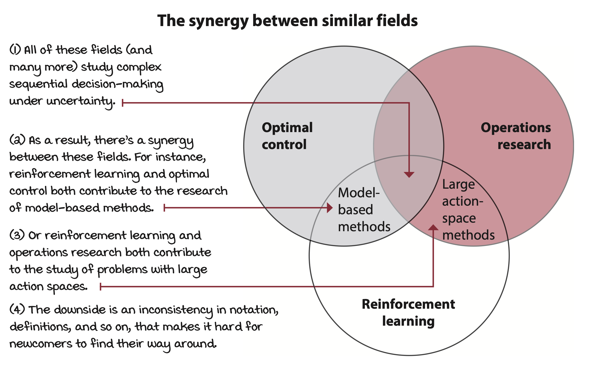
Agent and Enviroment
- Agent: Refers exclusively to the decision-making entity.
- If you are training a robot arm to pick up a toy. Only the code that makes decision is the agent not the robot arm
- Environment: Includes everything external to the agent, beyond the agent’s control, and everything that follows the agent’s decisions.
- If you are training a robot arm to pick up a toy. objects to be picked up, the tray where the objects lay, the wind, and the arm are parts of the environment
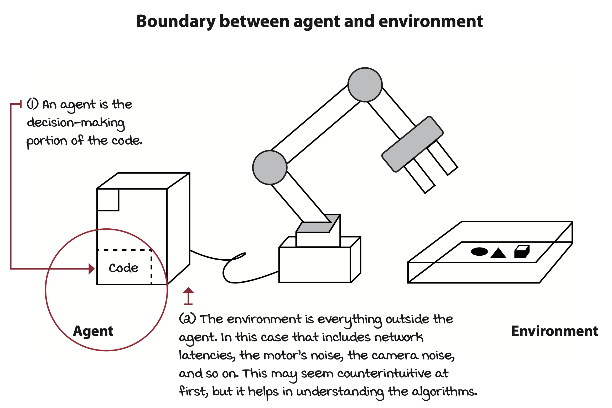
States and Observations
- State Space: The set of all possible variables and values that can represent the state of the environment.
- State: A comprehensive description of the environment, or an instantiation of the state space.
- Observation: A partial or incomplete description of the environment.
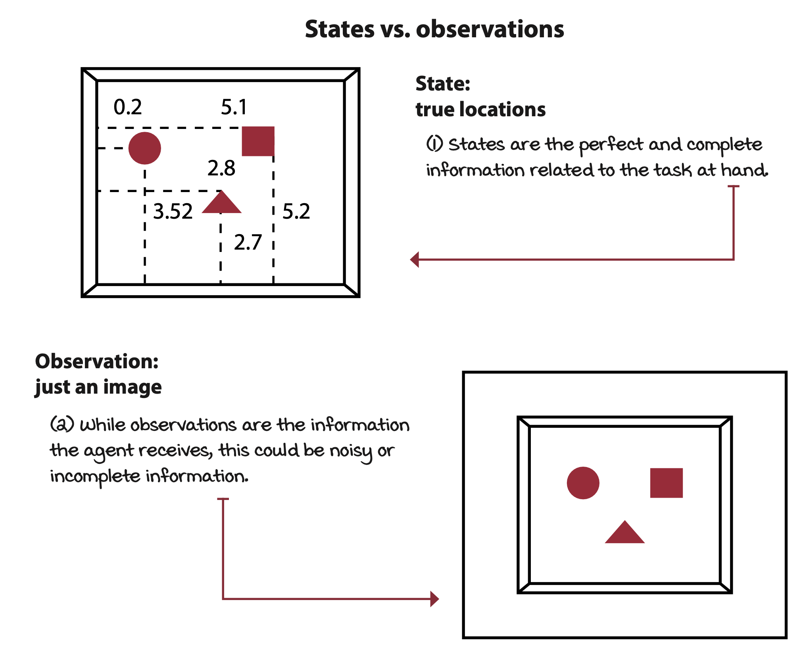
Reinforcement Leraning Cycle
- Transition Function: The mapping from the agent’s action to a potentially new state.
- Reward Function: The mapping from the action taken to the potential reward signal.
- Goals are defined via the reward function.
- Model: A set of the transitions and rewards.
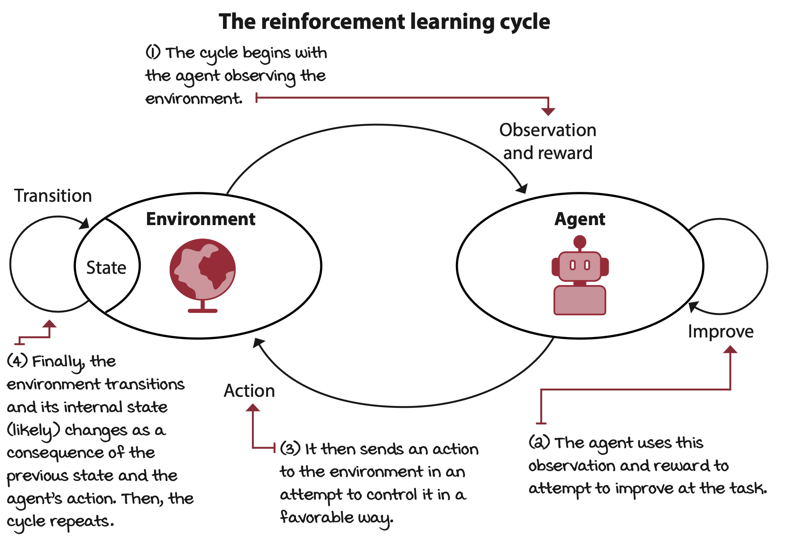
Agent’s Improvement process:
- Interact with the environment.
- Evaluates its behavior.
- Improves its responses.
Agent’s can be designed to learn:
- Policy: The mapping from observations to actions.
- Models: A model of the environment on mappings.
- Value Functions: The mapping of a state to its estimated value.
Experiences
- Time Step: A single cycle of interaction between the agent and the environment.
- Experience: The set consisting of the state, the action, the reward, and the new state in a single time step.
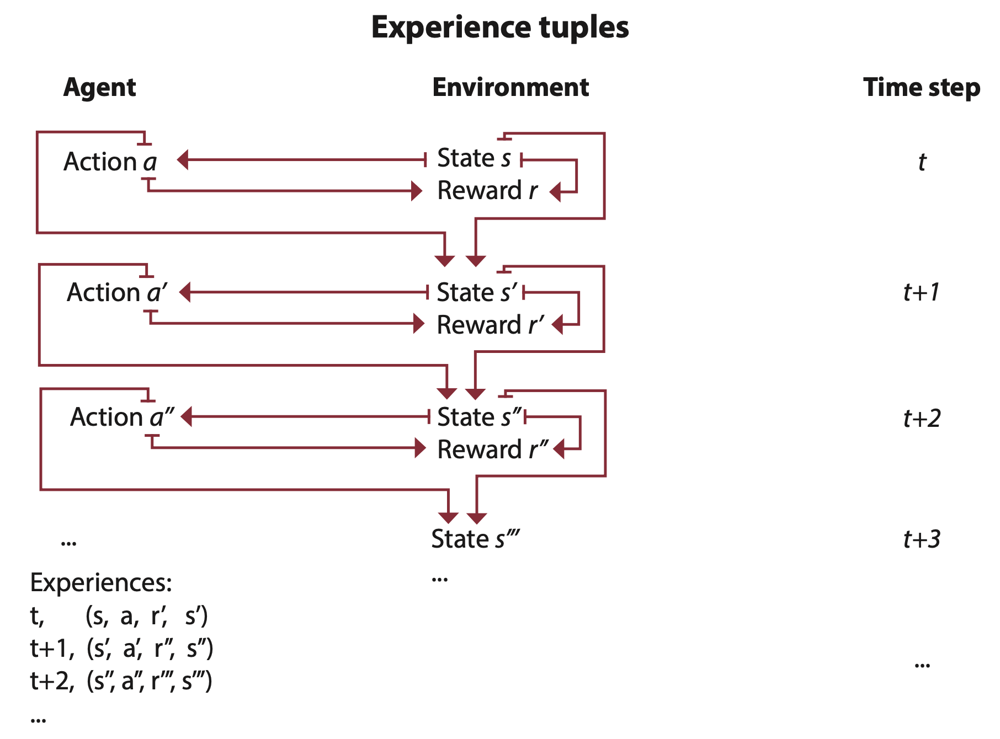
- Episodic Task: Tasks that have a natural ending or goes on finitely many step.
- E.g., video games
- Continuing Task: Tasks that don’t have a natural ending or could go on indefinitely.
- E.g., learning forward motion
Credit Assignment Problem
- Temporal Credit Assignment Problem: the challenge in determining which state and/or action is responsible for a reward the agent recieves
- Usually occurs when the agent may have delayed rewards from an action or state that caused it hence the temporal aspect of the problem
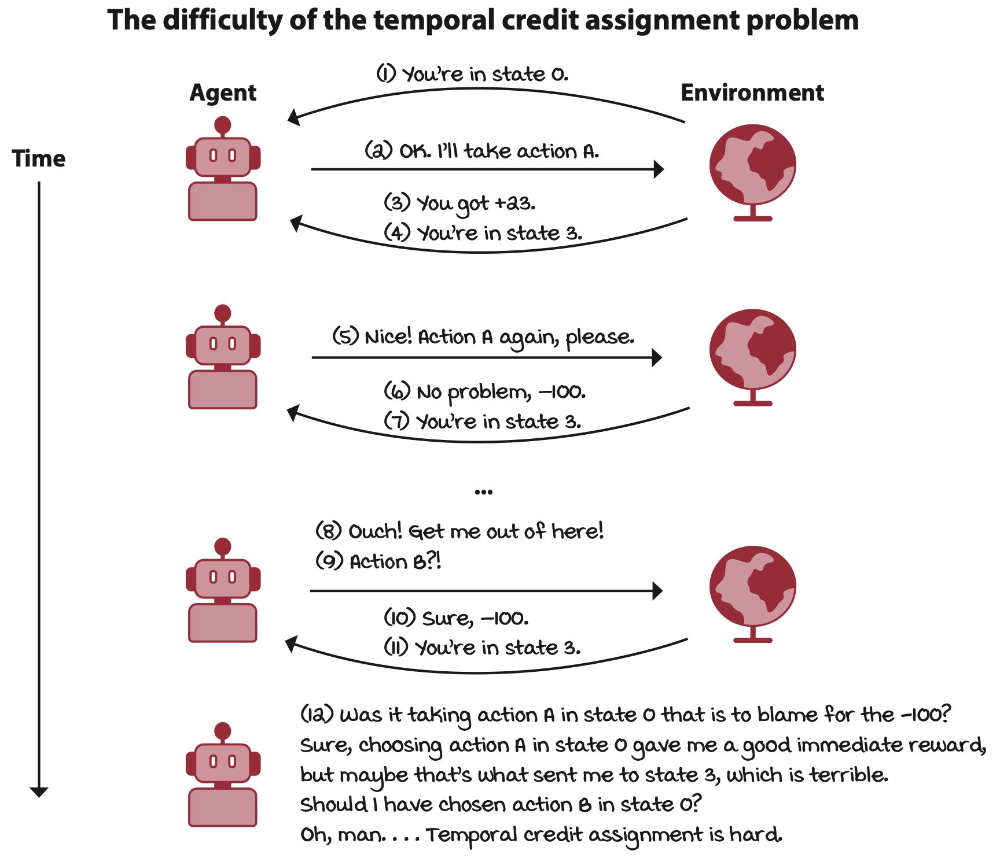
Exploration vs. Exploitation
- Evaluative Feedback: Feedback that provides an indication of performance but not correctness.
- Exploration versus Exploitation trade-off: The balance between collecting new information from the environment and using known information to maximize rewards.
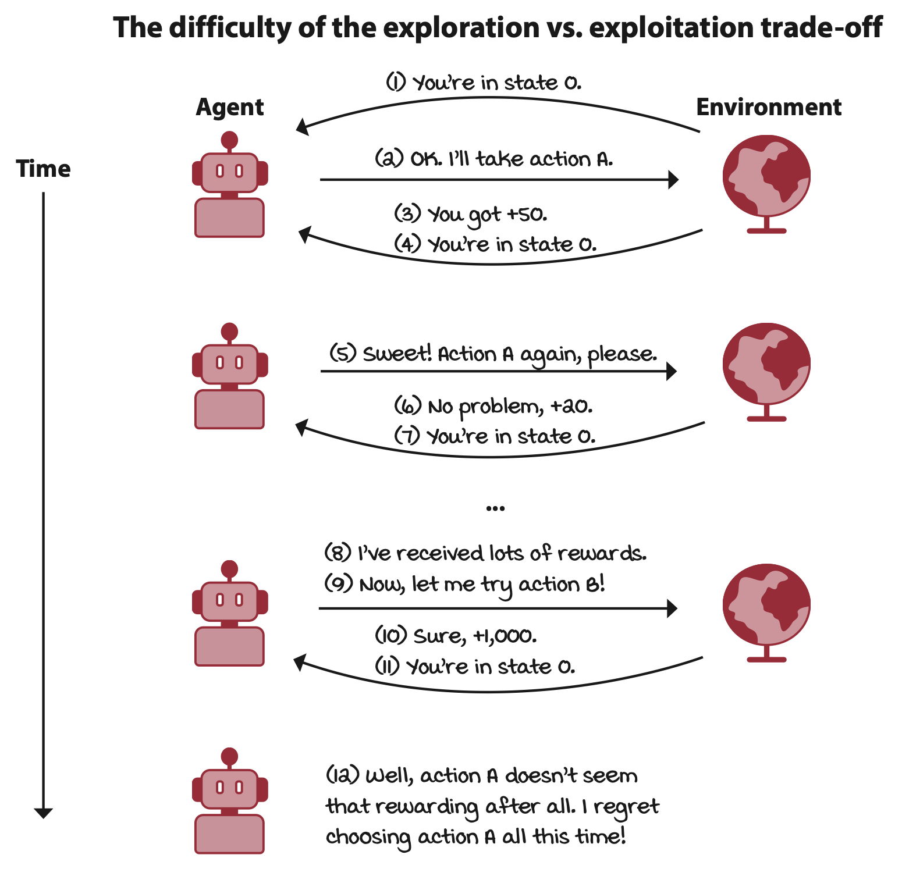
Sampled Feedback
- Learning from sparse or weak feedback becomes more challenging with samples only. The agent must be capable of generalizing to learn from sampled feedback.
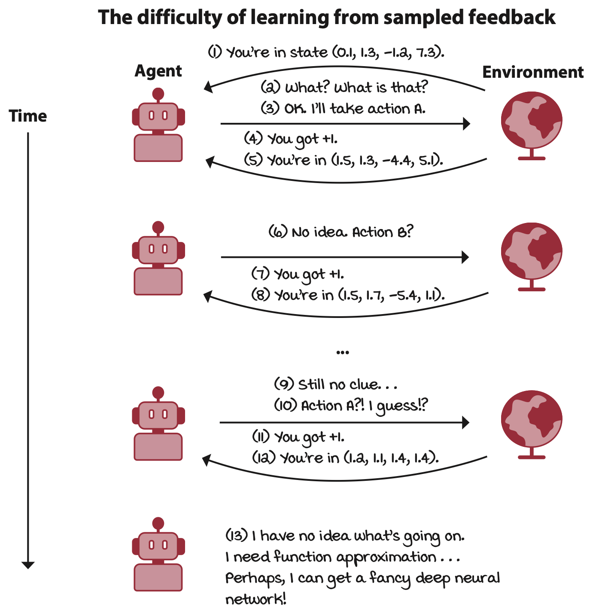
Types of Agents
- Policy-based: Designed to approximate policies.
- Model-based: Designed to approximate models.
- Value-based: Designed to approximate value functions.
- Actor-critic: Designed to approximate both policies and value functions.
Pros and Cons
Strength: Reinforcement learning excels in mastering specific tasks.
Weaknesses: To learn a well-performing policy, it generally requires millions of samples.
History of Deep Reinforcement Learning
Alan Turing - 1930: Developed the Turing Test, a test of a machine’s ability to exhibit intelligent behavior indistinguishable from that of a human.
John McCarthy - 1955: Coined the term “Artificial Intelligence”.
Andrew Ng - 2002: Trained an autonomous helicopter to perform stunts by observing human-expert flights using inverse reinforcement learning.
Nate Kohl and Peter Stone - 2002: Applied policy-gradient methods to train a soccer-playing robot.
Mnih et al. - 2013, 2015: Introduced the DQN algorithm, which learned to play Atari games from raw pixels.
- 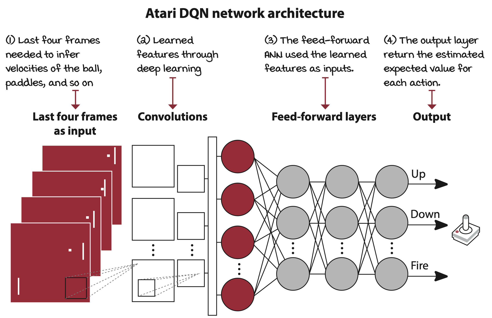
Silver et al. - 2014: Released the deterministic policy gradient (DPG) algorithm.
Lillicrap et al. - 2015: Improved DPG with deep deterministic policy gradient (DDPG)
Schulman et al. - 2016: Released trust region policy optimization (TRPO) and generalized advantage estimation (GAE) methods.
Sergey Levine et al. - 2016: Published Guided Policy Search (GPS)
Silver et al. - 2016: Demonstrated AlphaGo
…
References
Morales, M. (2020). Grokking Deep Reinforcement Learning. Originally Published: October 15, 2020.
All figures are sourced from this book.